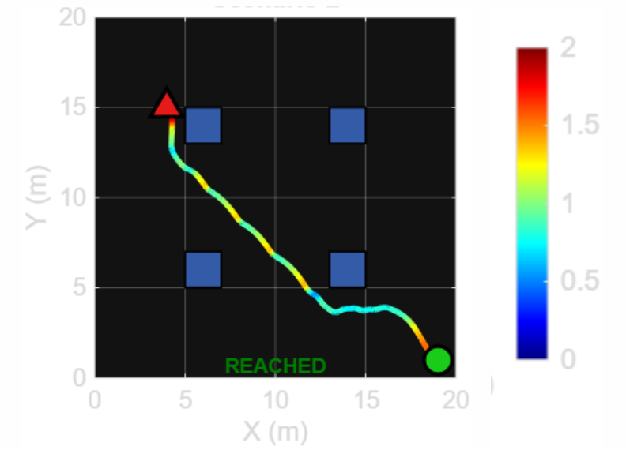
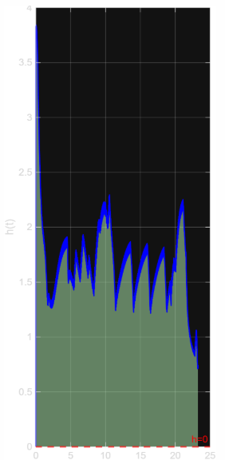

Presented Zhang & Hou's (IEEE RA-L, 2026) method for synthesising Control Barrier Functions on the fly from a single Control Lyapunov Function via translational symmetry, reproduced their planar two-rotor simulation, and critically evaluated the framework's practical limitations.
Autonomous drones are increasingly used for package delivery, warehouse operations, defence, and inspection — all settings where safe navigation isn't optional. Collisions risk human safety, damage expensive equipment, and undermine reliable deployment in the real world. The central question this paper addresses is how to guarantee safety in real time, in complex 3D environments, without the prohibitive offline computation that classical safety-certification approaches require.
Existing approaches to safe navigation each carry a distinct tradeoff:
The paper's central insight rests on translational symmetry: many mobile-robot systems — ground vehicles, spacecraft, point-mass systems, even legged robots on uneven terrain or cars on varying road conditions — have dynamics that don't depend on absolute position. This means a single, well-designed Control Lyapunov Function (CLF), whose region of attraction is computed once, can be spatially shifted to any point in free space and reinterpreted as a locally valid Control Barrier Function (CBF) there.
Concretely, for every point q in free space, the framework computes a CBF by combining the region of attraction of the CLF translated to q with a collision-free margin computed relative to nearby obstacles — ensuring the resulting barrier function stays positive (and therefore safe) precisely where needed. The minimiser of this combined function is obtained in closed form (via a Schur complement argument and Cholesky decomposition), which is what makes the synthesis fast enough to run online rather than requiring offline computation for every new environment.
Because the underlying CLF already guarantees stability within its region of attraction, and that property is preserved exactly under translation, one stability proof for the CLF directly implies validity of every CBF generated by shifting it — this is the key reason the method needs only a single CLF to generate arbitrarily many valid, position-specific CBFs.
Since multiple candidate CBFs (one per nearby obstacle/region) may be valid at a given instant, the framework includes an autonomous switching mechanism: at each switching interval (lower-bounded to avoid Zeno behaviour — infinitely fast switching), the robot evaluates all candidate barrier functions and activates the least restrictive one, reducing unnecessary conservatism while still guaranteeing safety. The active CBF is then enforced via a real-time CBF-QP that finds the minimum deviation from the nominal control input needed to satisfy the safety constraint.
To validate the paper's claims, its simulation was reproduced on a planar two-rotor system:

Reproduced trajectory — planar two-rotor system with A* nominal path

Safety constraint satisfaction — h(x) remains positive throughout
After fine-tuning gains and parameters, the controller converged successfully, with the barrier value h(x) remaining positive throughout — confirming safety was maintained. A practical observation from the reproduction: tightening the Lyapunov sublevel-set bound increased switching frequency and introduced visible chattering in the control behaviour, highlighting a real tuning tradeoff the paper doesn't fully explore.
Beyond reproducing the method, a central part of this presentation was identifying gaps between the paper's theoretical guarantees and what's actually needed for practical deployment: